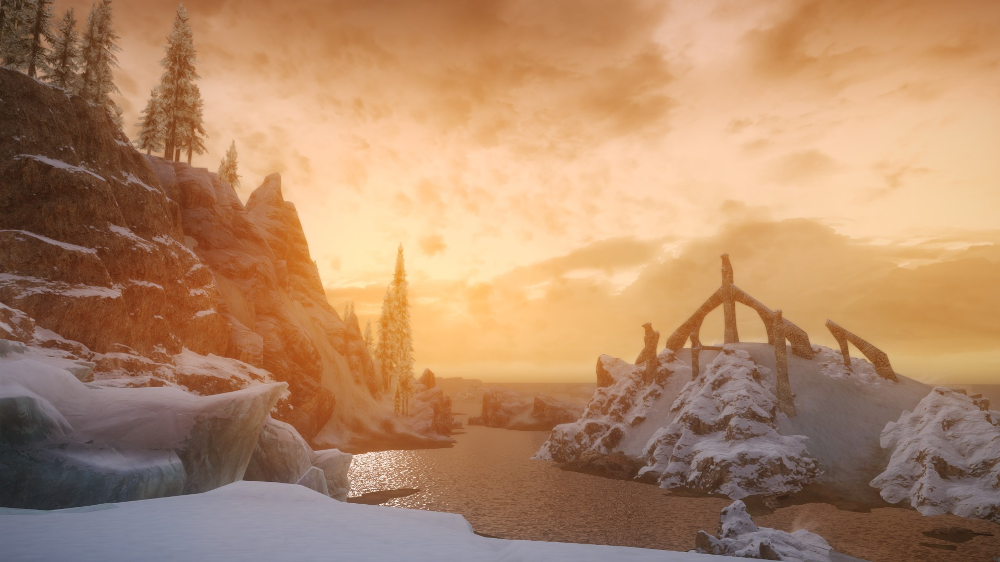
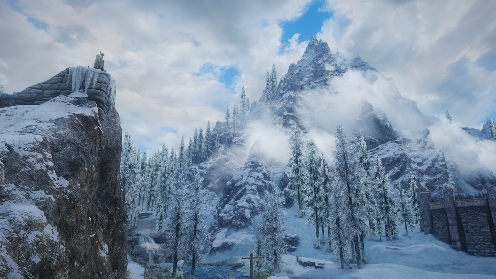
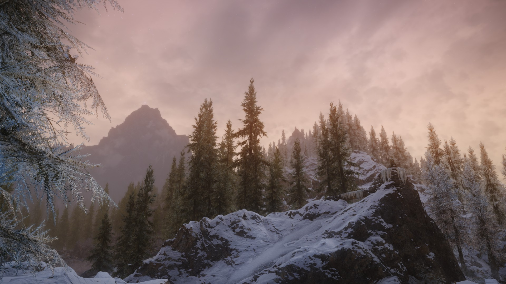
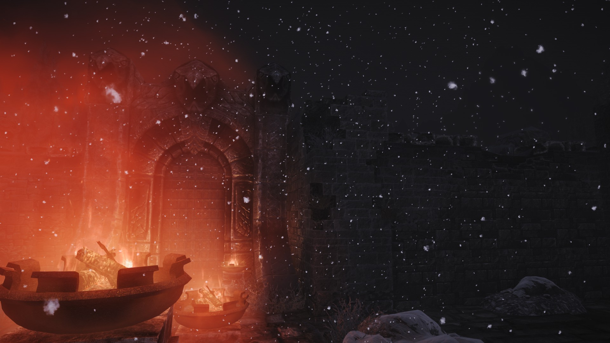

Some in-game screenshots.

This is a screenshot of Ysgramor's Tomb from a distance.

This is a screenshot just outside of Windhelm with Talos' statue overlooking the city.

Another image just outside of Windhelm with the statue of Talos but at a different time and angle.

A nighttime image outside the Candlehearth Inn in Windhelm looking at the gates to the city